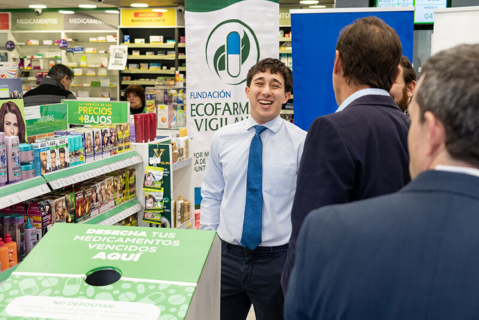
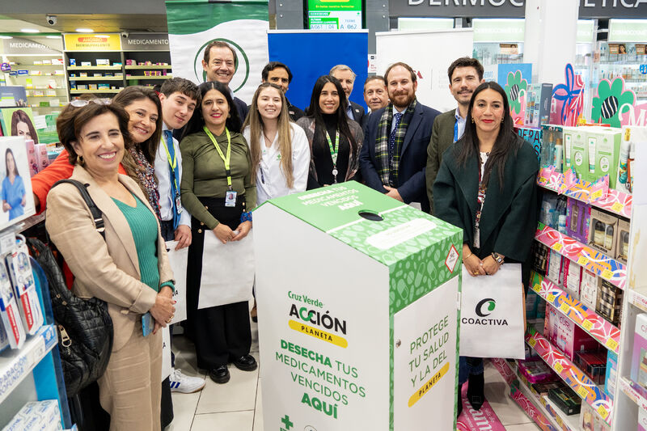

M
Nuestra misión
Convertir conocimiento en hábitos que protejan la vida.
Promover el uso seguro y la gestión responsable de los medicamentos mediante educación, innovación y alianzas con comunidades, instituciones y empresas.
Salud · Comunidad · Planeta
Impulsamos un uso seguro, responsable y sostenible de los medicamentos para proteger la salud de las personas, los animales y nuestro entorno.
Juntos remediemos.
El cambio empieza en cada botiquín.

Salud pública
con mirada sostenible
Enfoque One Health
una sola salud
Educación para decidir mejor
Acción para transformar hábitos
Innovación para cerrar el ciclo
Comunidad para llegar más lejos
Quiénes somos
Nacimos como Fundación Ecofarmacovigilancia Chile y evolucionamos a Remediemos: un nombre que invita a actuar. Articulamos conocimiento farmacéutico, educación y colaboración para cambiar la forma en que nos relacionamos con los medicamentos.
Nuestra misión
Promover el uso seguro y la gestión responsable de los medicamentos mediante educación, innovación y alianzas con comunidades, instituciones y empresas.
Nuestra visión
Aspiramos a una cultura de salud pública sostenible que comprenda que el bienestar humano, animal y ambiental es uno solo.
Nuestro trabajo
Impulsamos sistemas y puntos de recolección segura para medicamentos vencidos o en desuso, junto a aliados públicos y privados.
Acercamos información clara a la comunidad para prevenir riesgos, fortalecer la adherencia y cuidar el botiquín del hogar.
Diseñamos soluciones que convierten un residuo complejo en información y valor para una salud pública más sostenible.
Conectamos academia, territorio, industria y ciudadanía para que las buenas ideas se transformen en cambios duraderos.



Empieza hoy
Los medicamentos no van al lavaplatos, al inodoro ni a la basura común. Revisa tu botiquín y busca un punto autorizado.
Consultar puntos en Instagram ↗Fecha, estado y medicamentos que ya no utilizas.
No mezcles medicamentos con residuos domésticos.
Mantenlos lejos de niños, mascotas, agua y calor.
Llévalos a un punto de recolección autorizado.
Las personas detrás
Somos profesionales y voluntarios de distintas disciplinas unidos por una convicción: la salud sostenible se construye con conocimiento, empatía y trabajo colectivo.
 ↗
↗
Dirección ejecutiva
Fundador y articulador de innovación social.
Dirección sanitaria
Salud ambiental y enfoque One Health.
Secretaría
Sustentabilidad, divulgación y gestión.
Comunicaciones
Comunidad, contenidos y comunicación con propósito.
 ↗
↗
Publicidad y finanzas
Gestión, difusión y una de las impulsoras del proyecto.
La red sigue creciendo. Profesionales y estudiantes de distintas áreas hacen posible este trabajo.
Súmate al equipo →Hitos y encuentros
Junto a Farmacias Cruz Verde, FEMSA Salud Chile y Coactiva, aportamos a un programa que facilita la entrega responsable de medicamentos vencidos y en desuso.
El Sistema Integrado de Recogida de Envases y Medicamentos avanza conectando innovación, municipios y desafíos reales de ciudad.
Charlas y activaciones acercan la ecofarmacovigilancia a estudiantes, familias y equipos de salud.
Un nombre más cercano para una invitación colectiva: actuar por nuestra salud y la del planeta.
En terreno
“Remediemos no es solo un nombre: es un verbo, una invitación y un compromiso.”
Fundación RemediemosPreguntas frecuentes
Si no encuentras lo que buscas, escríbenos por Instagram.
Porque pueden terminar en el agua o el suelo, ser ingeridos accidentalmente o reutilizados de forma insegura. Su disposición requiere un manejo especializado.
Cada programa define lo que recibe. Antes de ir, revisa las instrucciones del punto autorizado; algunos excluyen agujas, vidrios o sustancias controladas.
Puedes participar como voluntario, proponer una alianza, apoyar actividades educativas o ayudar a difundir prácticas responsables en tu comunidad.
Sí. La fundación desarrolla educación farmacéutica y acciones de sensibilización. Contáctanos para conversar sobre tu organización, empresa o comunidad.
Hazte parte
Personas, comunidades, universidades y empresas: todas las manos cuentan. Cuéntanos cómo te gustaría aportar.